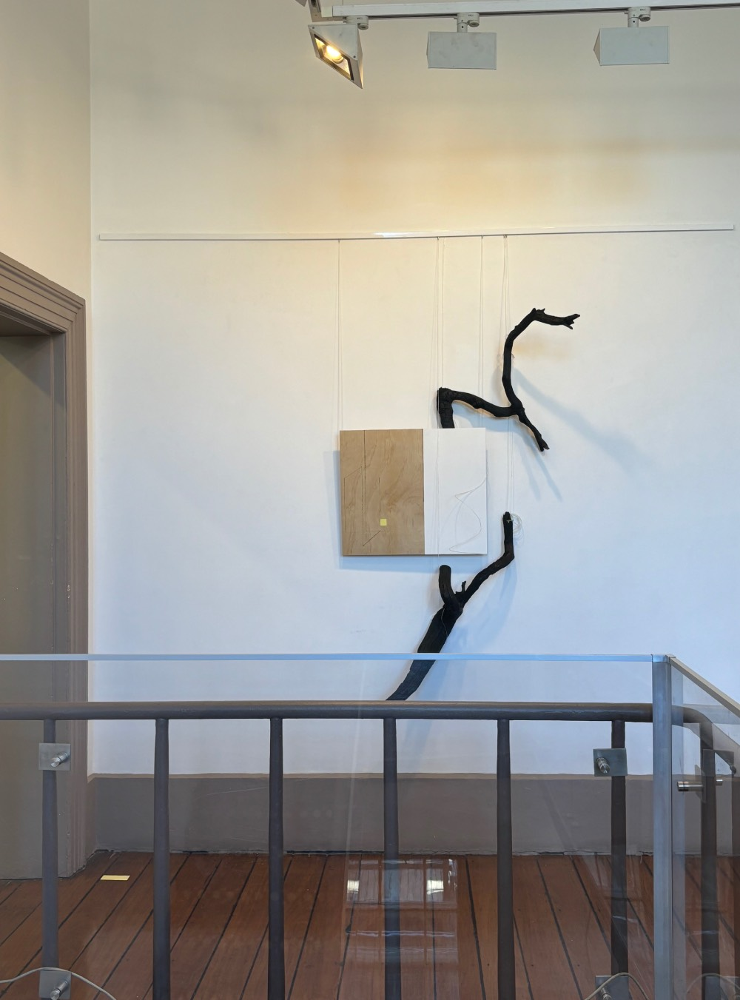
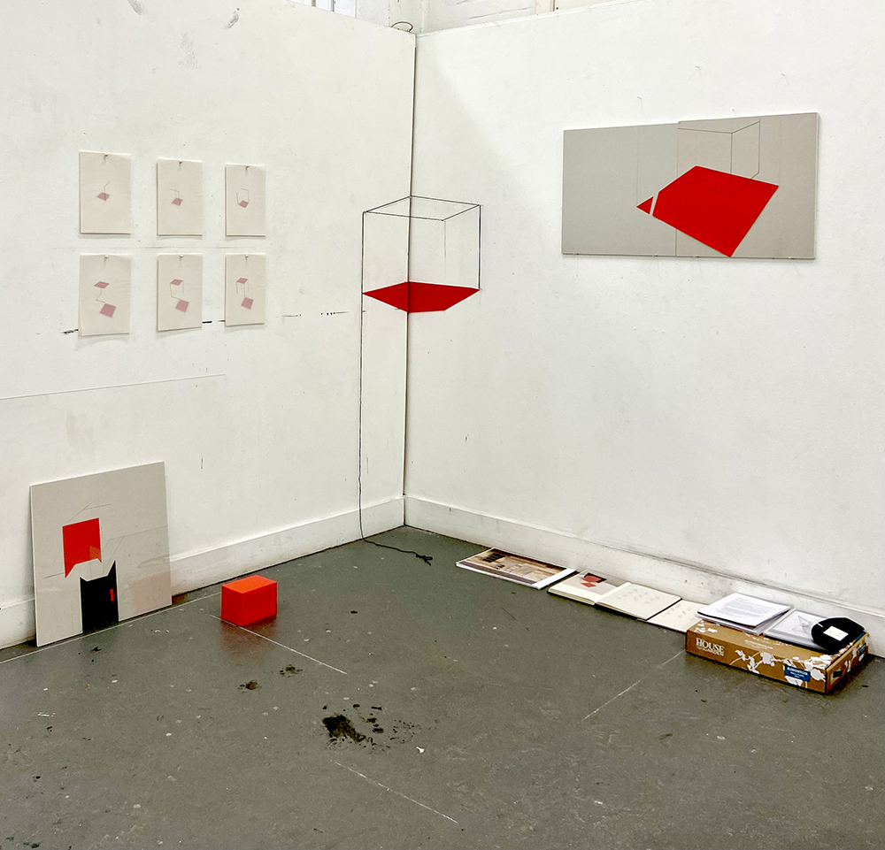

Derivaties N10 Wind 2024

Collaboration with Quanzhu Ma. Burnt wood, pyrography, acrylic and pencil on plywood, strings, paper on floor. approx.240x200x15cm
Dialogues is an exhibition featuring works by MFA Drawing students from stage 1 and stage 2. By working in pairs or groups, the students explored shared themes in their projects, fostering dialogue even when connections weren't immediately obvious. They collaborated both directly and indirectly on the artworks, enabling an exchange of ideas, mutual learning, and strengthening the Drawing Masters community.
NAS Library Stairwell Gallery DIALOGUES: MFA DRAWING
Plinth T 2023
Plinth, wire, red paper, black yarn, mirror sheet, chalk mark.
Plinth T was included in MARGARET OLLEY DRAWING WEEK 2023 exhibition at NAS Rayner Holf Project Space in Mar, 2023.
Plinth T was developed from Open Cube2. Working on a Plinth, the installation manifests the transformation power of drawing in gallery settings.
Open Cube2
Award: 2022 John Olsen Prize for Drawing (Highly Commended)

Plaster board, Red paper, tracing paper, black yarn, Acrylic sheet, glass, ink, pencil, charcoal, pins, nails.
My work started with exploring the relationship between the 2D forms and 3D structures. It leads to a big concept about connecting real space and illusionary space. My final work showing here is a play of visual space in layers.
Read More
Relic 2022

Recycled Styrofoam, Acrylic pen.
Relic 2022 is a site-specific work as part of a group show Library Insert, exhibited at NAS Library Stairwell Gallery in Mar, 2022.
Converted from a structure on the wall (Chamfer), made from Recycled Styrofoam which imitates the plaster appearance, Relic 2022 sets a conversation between a historical site and the audience in the library.
NAS Library Stairwell Gallery Library Insert
Up the stairs

Tape, Ladder, Books of Cinema, Colored pins, Steel rod, Wood.
Up the stairs is a site-specific work exhibited at Articulate Project Space in Feb, 2021. It is a part of the group project Proximity for NAS Drawing Week 2021.
The work was developed in a week and continued work on site, inspired by the unique long stairs connecting the ground gallery space to the second-floor studio corridor. The image shows the work located above and on the opposite wall of the original stairs.
Up the stairs explores the continuity of the real world into the illusionary space by mirroring the structure around. It plays space relationships both visually and intellectually.
Articulate Project Space Proximity